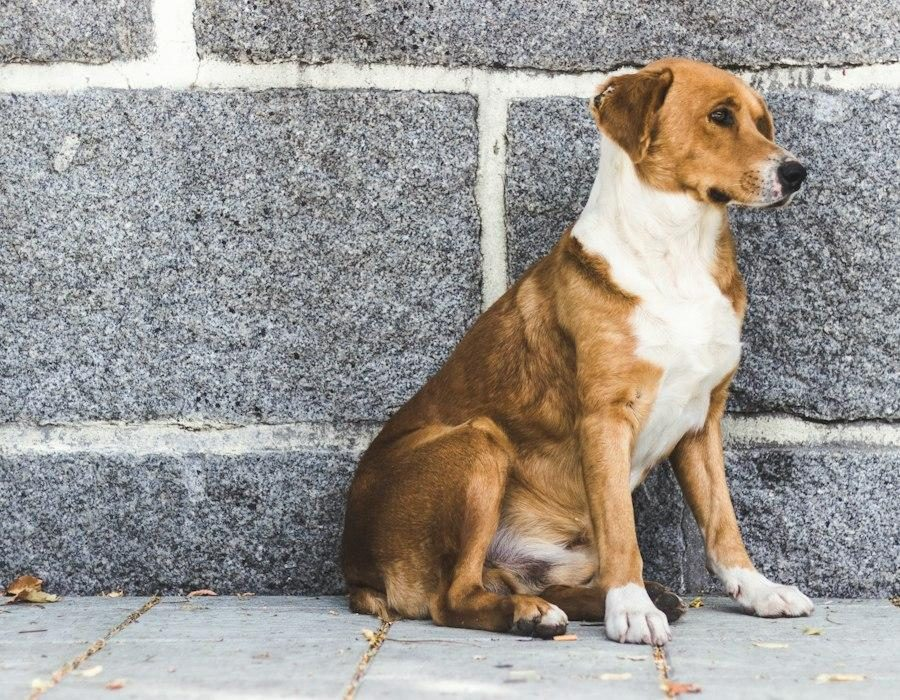
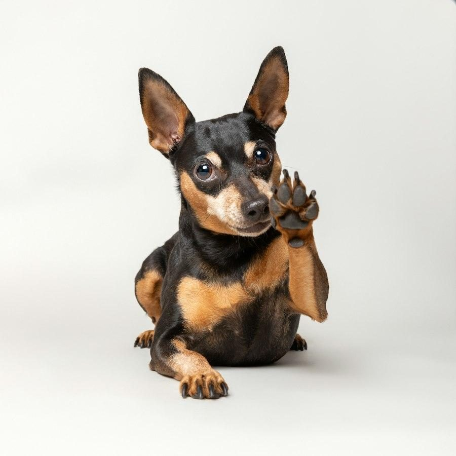
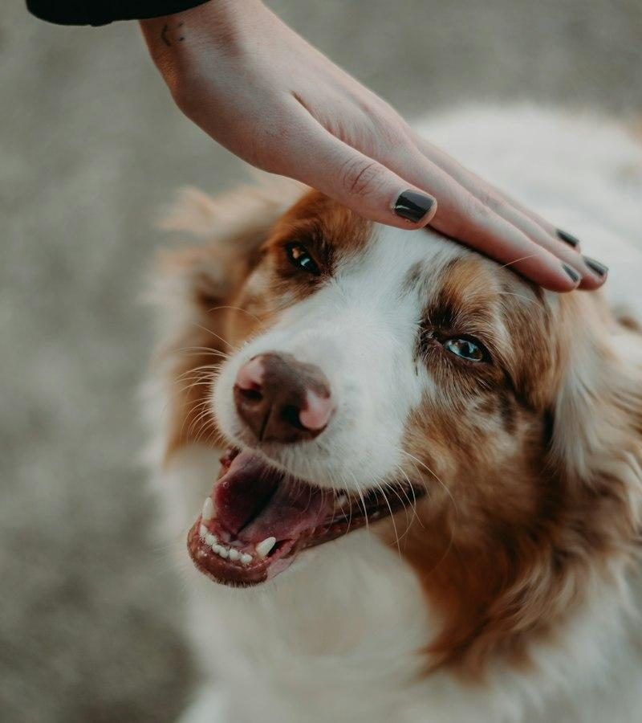
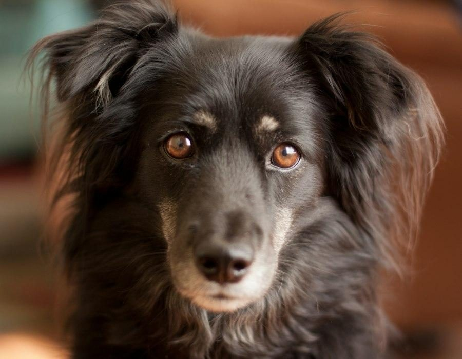
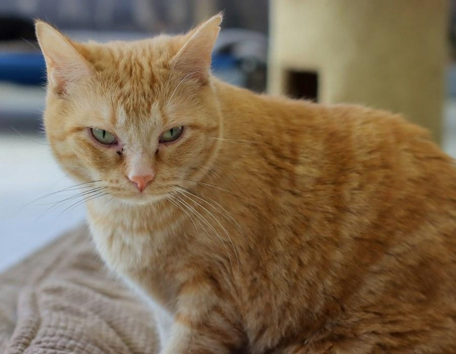
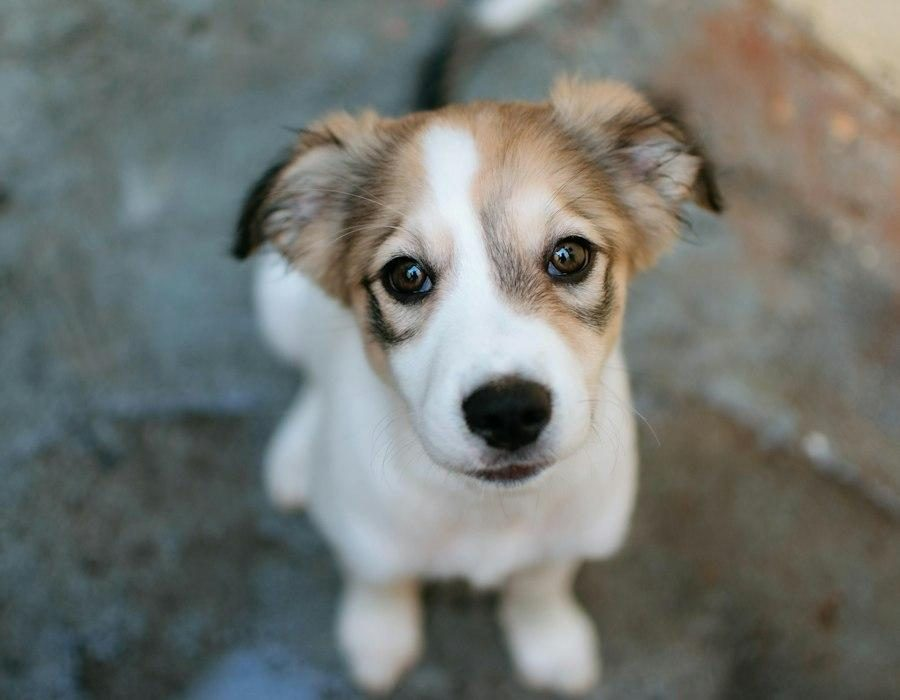
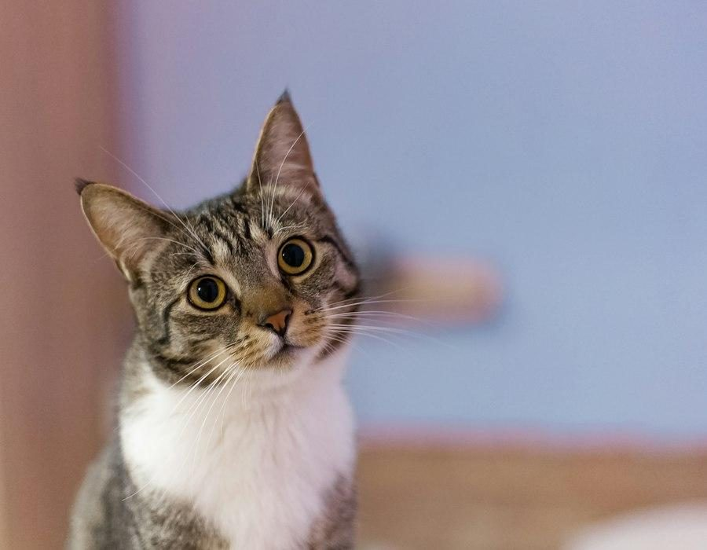
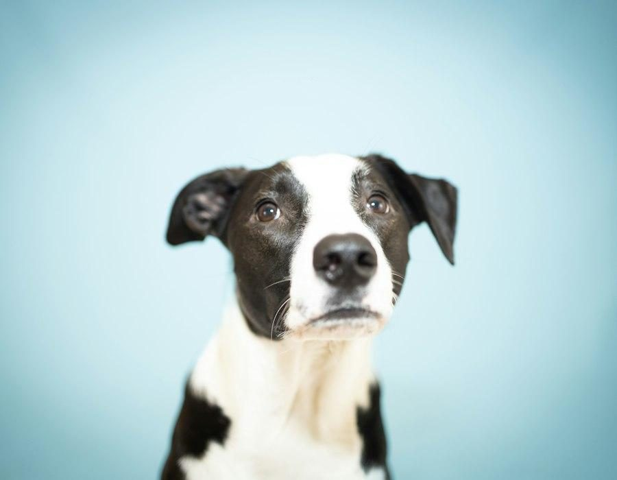
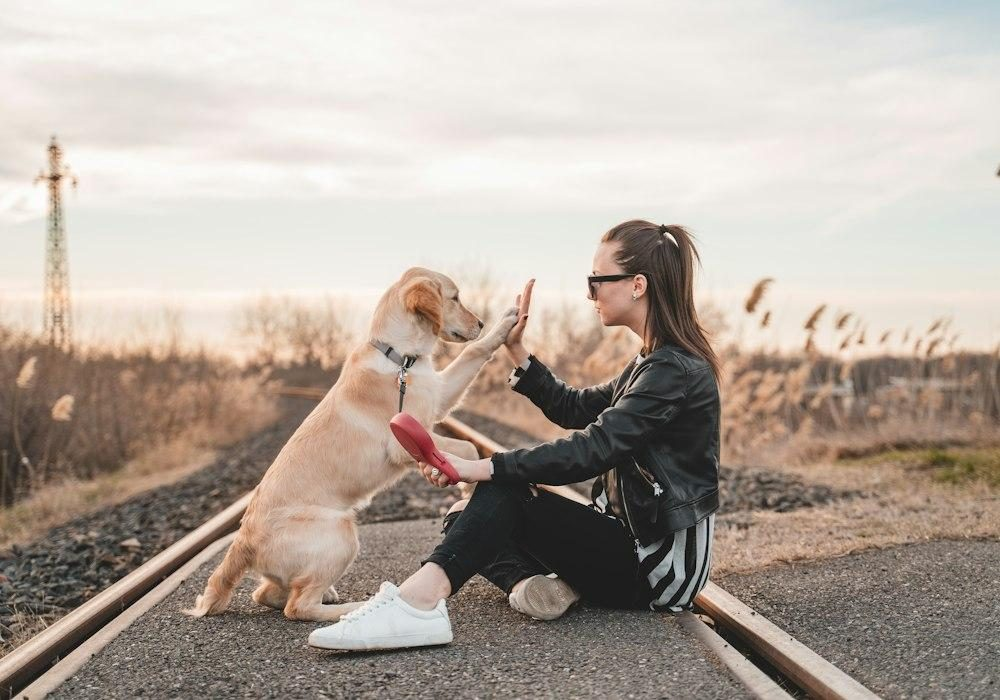

CãoFlor
Fêmea
Sem raça definida
Juiz de Fora · MG
Junte-se a nós nessa missão de amor e esperança!


Quem somos
A Sociedade Juizforana de Proteção aos Animais atua há quase 40 anos em Juiz de Fora, resgatando e cuidando de cães e gatos abandonados da cidade e da região.
Hoje o abrigo, na BR-040, cuida de mais de 600 animais — muitos resgatados doentes, prenhes ou com filhotes. Todo o trabalho se mantém com a ajuda da comunidade, que garante ração, vacinas, medicamentos e tratamentos veterinários.
Resgatar, tratar e encontrar lares responsáveis para animais abandonados.
Uma Juiz de Fora onde nenhum animal viva abandonado nas ruas.
Respeito à vida, cuidado, transparência e adoção responsável.
Conheça alguns de nossos animais

CãoFêmea
Sem raça definida

CãoMacho
Sem raça definida

GatoMacho
Sem raça definida

CãoFêmea
Filhote

GatoFêmea
Sem raça definida

CãoMacho
Sem raça definida
Conheça os animais aqui no site ou visite o abrigo.
Preencha a ficha de interesse e converse com nossa equipe.
Agende um encontro para conhecer seu futuro companheiro.
Assine o termo de adoção responsável e leve seu amigo para casa.
Faça parte
Dê uma nova chance a um animal resgatado e ganhe um amigo para a vida toda.
Ver animaisPix, kits de cuidado ou itens como ração, remédios e cobertores.
Como doarContribua todo mês com os cuidados de um animal enquanto ele espera por um lar.
Quero apadrinharAjude na limpeza, alimentação, passeios e eventos de adoção.
ParticiparAjude a ONG
Escolha um kit e ajude diretamente no cuidado de quem mais precisa.
R$ 25
Desinfetante à base de amônia quaternária para desinfecção das baias. Mantenha o ambiente limpo e seguro!
R$ 50
Vacina essencial para imunizar e proteger cães e gatos, garantindo a saúde e o bem-estar dos nossos animais.
R$ 100
Soro, cateter, equipo, esparadrapo e medicação. Essencial para o cuidado e a recuperação dos animais.
63% da meta — faltam 740 kg para alimentar todos os animais neste mês.
Para retirada de doações de rações, remédios, cobertores e outros itens, entre em contato pelo telefone para agendar.
Ou deixe suas doações com nossos parceiros:

Voluntariado
Participe dos nossos mutirões de limpeza, alimentação e cuidado com os animais, ou ajude nas feiras de adoção. Toda ajuda faz diferença!
Quero ser voluntárioDúvidas frequentes
Não. Pedimos apenas o compromisso com a adoção responsável: cuidado, alimentação, vacinas em dia e muito amor. Contribuições espontâneas são sempre bem-vindas.
Sim! O atendimento é de segunda a sexta, das 8h às 13h, na BR-040, km 787. Recomendamos ligar antes para combinar a visita.
Doações em dinheiro (Pix), rações, remédios, cobertores e produtos de limpeza. Também é possível doar um dos nossos kits de cuidado.
Você escolhe um animal e contribui mensalmente com os custos de alimentação e saúde dele enquanto ele espera por uma família. Fale com a gente para combinar.
A SJPA atende Juiz de Fora e cidades próximas. Entre em contato para avaliarmos cada caso.
Contato
Quer adotar, apadrinhar, agendar uma retirada de doações ou tirar uma dúvida? Escolha o canal que preferir.